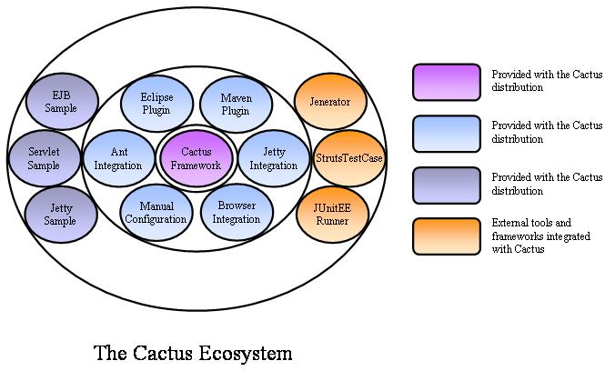

|
|
| Apache > Jakarta > Cactus | Docs for: v1.7.2 | v1.7 Last update: March 26 2006 |
|
Project DescriptionCactus is a simple test framework for unit testing server-side java code (Servlets, EJBs, Tag Libs, Filters, ...). The intent of Cactus is to lower the cost of writing tests for server-side code. It uses JUnit and extends it. Cactus implements an in-container strategy, meaning that tests are executed inside the container.

The Cactus Ecosystem is made of several components:
Different kinds of unit testsThere are several kinds of unit testing frameworks. We categorize them in 3 types:
Ideally you would use 3 different frameworks just to unit test your code ! Then you have to think about acceptance testing, system integration testing, ... Cactus was developed to fit Type 2 but also to be a very good compromise for types 1 and 3, with the idea that it is much easier to have to write tests for a single framework than for several ! Moreover, you can never fully test your code. We believe Cactus provides a middle ground that provides a high confidence that your code will run when deployed. However, it is your choice and you can use Cactus only for type 2 if you wish. Getting StartedTo get started, read the Getting Started guide. |